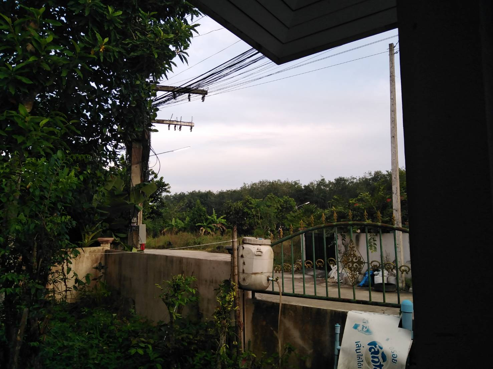

program1519-web!
นอนไม่หลับ
by program1519 26/9/2565

02.html ( บรรยากาศตอน เช้า )
ตั้งแต่ปิดเทอมมาผมก็เริ่ม นอนดึก ประมาณ ตี2 - 3 ถึงจะนอน ก็เป็นแบบนั้นมาตั้งแต่ปิดเทอม ก็จนถึงวันนี้ก็ใช้ ชิวิต ตาม ปกติ
วันนี้ พอประมาณ ตี2 ก็เริ่มนอน แต่ ก็นอน ไม่หลับ ไม่รุ้ เป็นไรก็นอนพายายามนอนไม่คึดอะไร จนถึง ตี5 คือยังไม่ได้นอน เลยยยยย เพาระ นอน ไม่หลับ
สรุปคือ วันนี้ยังไม่ได้นอน ผมอาจจะตายในเร็วๆนี้ก็ได้555 วันนี้ผมคงต้องจัดเวลานอนแล้วละ อ่าา
ใดรมีวิธิแนะนํามาบอกกันได้นอออ